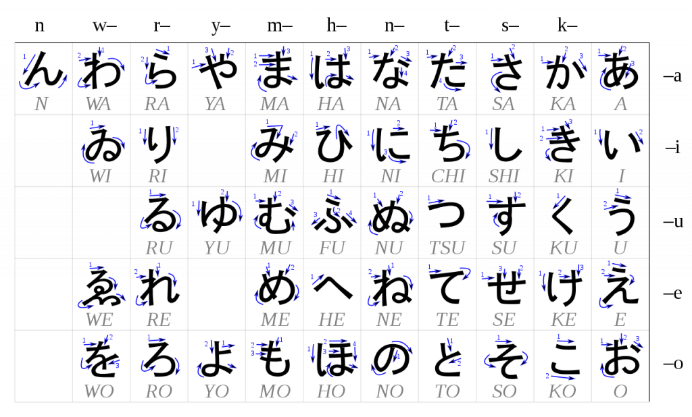
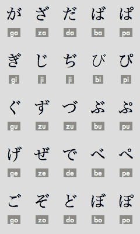
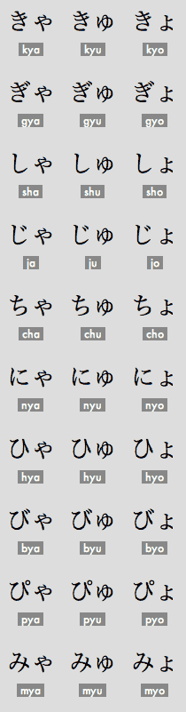
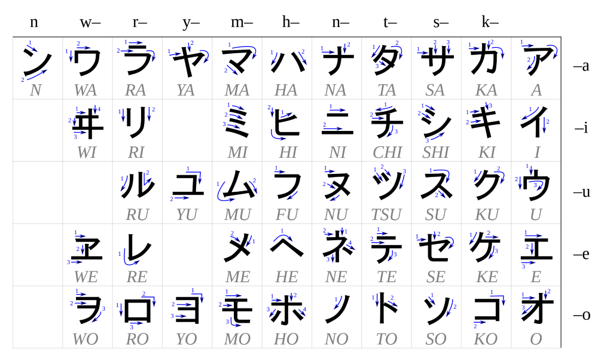
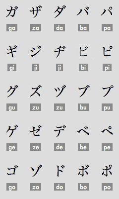
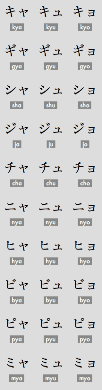

Lesson 1:Introduction to Japanese
Japanese is the language of Japan
Japanese has three types of the script:
1.Hiragana: (Only use fo the Japanese origin words.)
2.Katakana: (Only use for foreign origin words.)
3.Kanji: (They are the pictograms which discribe a thing or any action with the help of symbol.)
Inshort Hiragana and Katakana are phonetic symbols purely representing sounds,while kanji are ideographs,Conveying
meanings as well as sounds.
Hiragana:
So,we will see how to write Hiragana Characters of Japanese:
The five vowel sounds, a (ah), i (ee), u (oo), e (eh), o (oh), are combined with the consonant sounds k, s, t, n, h, m, y, r, w to produce almost all the sounds represented by hiragana characters.
The characters above are the ones you should teach yourself to read and write. Looking over the chart above you might be tempted to think "Why don't they just use Roman letters?!?"
but it actually helps your pronunciation to learn to associate the sounds of Japanese words with hiragana.The characters starts from right to the left direction and from top to bottom as shown in the table.

Some of the basic hiragana characters above are also written with modifiers that change the consonant sound slightly.
For example, by adding two small vertical dashes or a small circle,that small vertical dashes are known as "ten-ten". the pronunciation of the hiragana for "ha" becomes "ba" or "pa".
The chart below contains the complete list of possible combinations:

When a ya, yu, or yo sound follows certain characters in Japanese, the sound is shortened and so instead of two separate characters,
the sound is written as the combination of the first character and a small, subscripted version of the ya, yu, or yo sound that follows:

This combinations are known as the patalized sounds.
Once you've learned these characters, you're ready to start reading Japanese!
Katakana:
after the Hiragana characters we will see the Katakana Characters which is only use for the Foreign origin words.As we have seen in the katakana is used when writing foreign loan words, often words taken
directly from English.

Just as with hiragana, by adding two small vertical dashes or a small circle, the pronunciation of the katakana for "ha" becomes "ba" or "pa".
The chart below contains the complete list of possible combinations:

Similarly, when a ya, yu, or yo sound follows certain characters, the sound is shortened and so instead of two separate characters, the sound is written as the combination of the first character and a small,
subscripted version of the ya, yu, or yo sound that follows:
